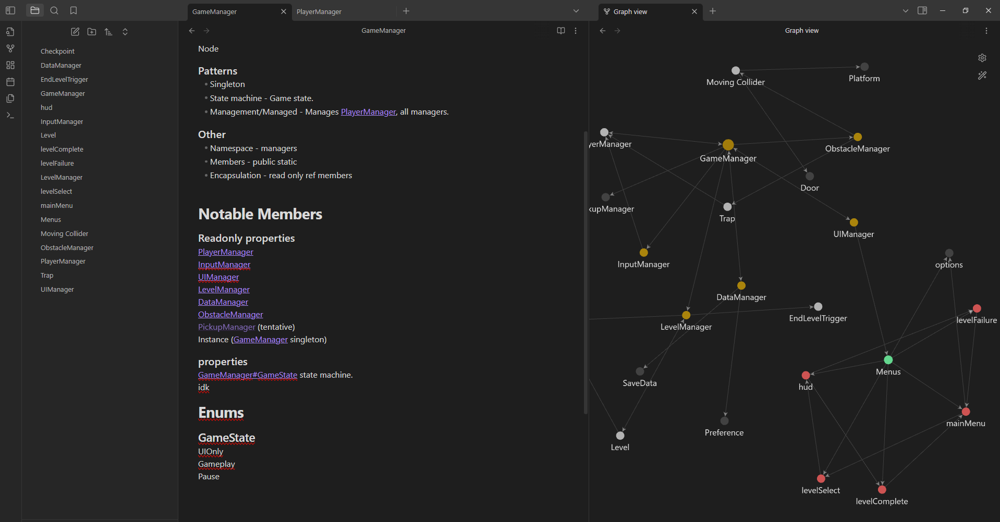
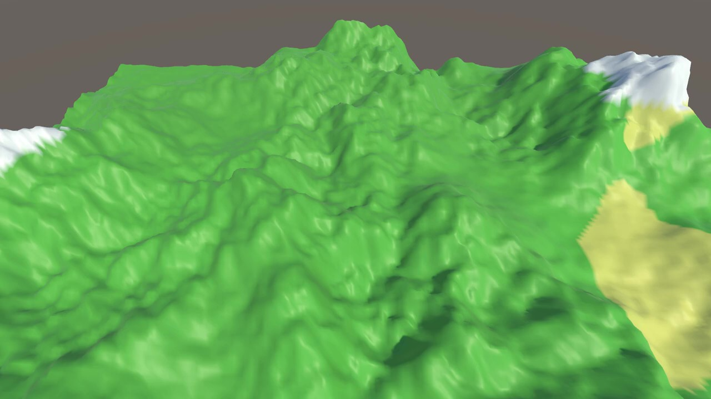

Here is some of the stuff I've made.
Orbmania is a 3d level based adventure built in Godot, where the player takes control of a robotic ball that has been mistakenly been made sentient. Explore as you roll through levels and try to escape the factory.
This project was mostly focused on the architecture, trying to make a system that is robust enough to endure 3 months of development without being reduced to spaghetti. If I had to judge how my time was spent, I'd say most of it was spent on the following: actually writing code, writing notes from which to code and debugging, split 50/25/25 respectively (see obsidian vault screenshot below).
I faced 2 major issues while working on this, in addition to the goals I was focusing on. Firstly, I'm now questioning if I fell into the trap of overplanning. If overscoping means that you have too many things vying for your time at once, I see overplanning as giving something too much forethought that you choke out development time. Secondly, as a symptom of the aforementioned overplanning, I did attempt to overarchitect, and thus overscope certain elements of this project, such that they were left in a spaghettified state. Thankfully though, I did encapsulate the mess enough that it had a fairly minimal impact anywhere else. On the other hand however, my planning now leaves me prepared with more tools for future projects.
This project is in an archived state, but is available via Github releases. (click here)
This was a terrain generation algorithm I designed to loosely resemble how minecraft generates terrain, without having terrible performance, and still feeling "alive".
For this project, most of my efforts went into the "3d printer effect" as I've been calling it. I thought it would be a simple way to "bring the project to life", but it turned out to be more difficult than I thought. For loops appear to not be designed for being split apart in the way I needed, but I realized it far too late, and eventually had to redo the entire iteration system.
Here's the final code responsible for placing terrain.
void PlaceBlocks()
{
bool b = false;
// Now, check for adjacent blocks other than air. If we get 6 directly adjacent, or the block is air, don't render the block. Otherwise, place it.
while (x < blockTypes.GetLength(2) && y < blockTypes.GetLength(1) && z < blockTypes.GetLength(0))
{
if (b) { return; }
// bools for negative/positive in each direction.
bool xn, xp, yn, yp, zn, zp;
// Check if there's air, and if index out of range, set false.
try { xn = RenderCheck(x - 1, y, z); } catch { xn = false; }
try { xp = RenderCheck(x + 1, y, z); } catch { xp = false; }
try { yn = RenderCheck(x, y - 1, z); } catch { yn = false; }
try { yp = RenderCheck(x, y + 1, z); } catch { yp = false; }
try { zn = RenderCheck(x, y, z - 1); } catch { zn = false; }
try { zp = RenderCheck(x, y, z + 1); } catch { zp = false; }
// Now compare everything.
bool adjacencyCheck = !(xn && xp && yn && yp && zn && zp);
BlockType blockType = blockTypes[x, y, z];
if (blockType != BlockType.Air && adjacencyCheck)
{
PlaceBlock(x, y, z, blockTypes[x, y, z]); count++; if (count >= data.blocksPerTick) { b = true; }
}
UpdateXYZ();
}
Debug.Log($"4 {x},{y},{z}");
if (b) return;
Debug.Log($"Finished generation in {framesToGenerate} frames."); ready = false;
}
void UpdateXYZ()
{
z++;
if (z >= blockTypes.GetLength(2)) { z = 0; x++; }
if (x >= blockTypes.GetLength(0)) { x = 0; y++; }
Console.WriteLine("" + x + y + z);
}
This was a terrain generator designed to generate a singular mesh. My goal was to have terrain such that I could have mountains off in one corner of the map, plains in another and a jungle somewhere else. Unfortunately, that didn't go to plan, as some maths errors and lerping issues caused my colour interpolation to not work. Had I given myself more time, I might have been able to resolve it.
